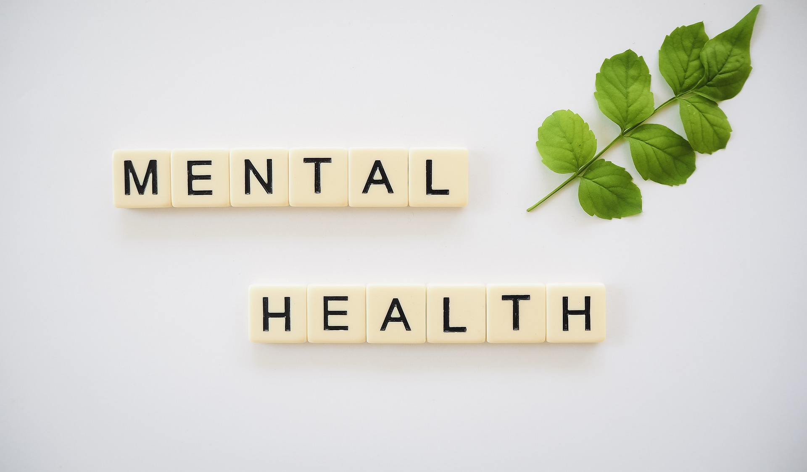

Large scale crises don’t only affect those directly involved. In the case of the COVID-19 virus or any other major public health concern, many people may experience anxiety, worry or stress – as we are dealing with the unknown, and with implications that are out of our control.
However, it’s important to remember that these feelings can be managed – and that paying attention to your mental health will not only help you to cope during the difficult times, but also to build a strong foundation for the future.
Why it’s important to address your worries
Stress and anxiety can have a negative impact on your health – both in the short and long term, including contributing to high blood pressure, heart problems, obesity, and more severe anxiety and mental health problems.
Below are some ideas to help keep on top of these feelings and lessen the impact of stress and worry on your physical and mental health.
Limit your media exposure
Watching, reading, or listening to ongoing coverage can leave you feeling further isolated and depressed, and can increase symptoms of acute stress. Give yourself large breaks from COVID-19 related coverage, including through social media channels.
Go to trusted sources
In times of worry or uncertainty, there are often lot of myths and misinformation being shared (particularly on social media), as people rush to make sense of the situation. Misinformation can rapidly add to our fear and anxiety. Seek out contributors you can trust (such as the World Health Organisation or your state’s Department of Health), and don’t rely on other sources. Think critically, analyse, check facts, and don’t contribute to other people’s worries by sharing anything that doesn’t come from a reputable source.
Talk about it (but know when to stop)
It may help to discuss your feelings with people you trust. Others may also be looking to talk it through with you. However, you should monitor your feelings– if you feel you are focusing too much on the crisis, then be sure to let people know you’d like to change the subject.
Look after your health
Stress can manifest both physically and mentally. Stick to your daily routine, and try to get some exercise (YouTube has some great free exercise routines that don’t involve any workout equipment) and some quality sleep. Avoid using drugs and alcohol to cope with your feelings.
Keep busy and connected inside, while social distancing
Take the time to practice self-care when isolated. Do the things you love – cook, read, or connect with others (virtually). Even if you are physically restricted, support is available over the phone or online. Many cultural institutions, artists and comedians are making free content to help everyone stay connected during COVID-19. Recognise we are all in this together, and stay in touch online to share your experiences.
If this crisis has directly affected you
If you’re out of work because of this crisis, or you or your family are sick, reach out for help. As well as the official channels listed below, friends and family will want to help, so let them know if you are struggling.
Help others
If you feel you can, then helping others can distract you from your own worries, and make you feel part of your community’s response to the crisis. In the case of Covid -19, you could take a safe and appropriate action (being mindful of social distancing) such as calling to check in on an elderly relative or friend or donate online to those hit hardest.
Make future plans
Remember that crises do pass, and there will be less stressful times ahead. Making plans for when life returns to normal can help to keep things in perspective.
Don’t let your feelings overwhelm you
Worrying about worst case scenarios only adds to stress. Keep things in perspective, and work on what you can control – such as following expert advice, socially isolating, and practising good hygiene.
Children may need your guidance
While it’s hard for adults when faced with uncertainty, children will need even more help with how to cope. Moderate what they see and hear and make sure your discussions are age appropriate. Let them ask questions, and dispel any misinformation they may have picked up from friends or social media.
Seek support
You may also wish to seek professional help from your GP, psychologist, or a qualified counsellor.
Here are some more that can help your mental health:
 |
 |
 |
 |
How to balance living and
working from home |
Common mental health concerns |
5 natural healing treatments
for depression and anxiety |
5 ways that talking about
mental health can bring people closer |